Algorithmic Regularization (AR)
The algorithm used in this code is based on the literatures of Mikkola & Tanikawa (1999) and Preto & Tremaine (1999). The development of this code refers to the Chapter 2 (Mikkola) in book The Cambridge N-body Lectures. Here the basic idea of AR is described.
The numerical simulations of gravitational N-body systems dynamical evolutions are frequently used in astrophysics. However, due to the singularity of two-body gravitational potential when these two particles become infinite close lead to the difficulty in the highly accurately integration of two-body bounded system with very high eccentricity. To get high accuracy of integration when two particles are very close, the time step for integration should be reduced significantly. This result in time consuming computation if number of particles is large. On the other hand, for a long-term integration, the total energy of the systems may be systematiclly drifted due to the numerical accuracy of integrators. Thus the sympletic methods are suggested to be used since it can keep the energy conservation for long-term integration.
However, the sympletic methods are difficult to be applied for gravitational systems due to the required time step (integration step) shrinking when two particle get close. Thus Mikkola & Tanikawa (1999) and Preto & Tremaine (1999) develop the special time transformation method based on the extended phase space Hamiltonian. The time  become a general coordinate in Hamiltonian with corresponding general momentum
become a general coordinate in Hamiltonian with corresponding general momentum  . The integration of the equation of motion then depends on the new differential variable
. The integration of the equation of motion then depends on the new differential variable  . In this case, time and the motion of the system can be integrated with a fixed step size of s, which allow the usage of sympletic methods.
. In this case, time and the motion of the system can be integrated with a fixed step size of s, which allow the usage of sympletic methods.
Hamiltonian in Extended Phase Space
Defining the general coordinates as  with freedom of
with freedom of  and corresponding general momentums ad
and corresponding general momentums ad  , The Hamiltonian equations is:
, The Hamiltonian equations is:
(1) 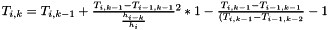;
Here the dt is used as a differetial varaible. For the propuse as we discussed above, we want to use a new variable s replacing the function of time . In this case, the time is treated as a new general coordinate. And the corresponding time momentum should be also added.
We extend the coordiantes to 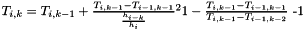 and the momentums to 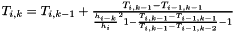 with total freedom of 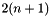.
The new Hamiltonian 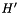 should also satisfy the Hamiltonian equations (1). Especially for  , we can get:
, we can get:
(2) 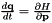;
From first equation of (2), we find the linearly depend on , thus can be the form as  . The second equation indicates that the time evolution of is equal to the negative energy change of the system. Thus the value of at the time can be
. The second equation indicates that the time evolution of is equal to the negative energy change of the system. Thus the value of at the time can be  .
.
We want to write Hamiltonian equations with new differetial variable  . Defining 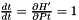, we can rewrite (1) with
. Defining 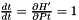, we can rewrite (1) with  and extended coordinates 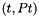 as:
and extended coordinates 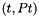 as:
(3)  ; 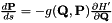
; 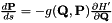
However, we need to have the Hamiltonian equations the same form as original, thus we need to find another Hamiltonian  that satisfy the Hamiltonian equations:
that satisfy the Hamiltonian equations:
(4) 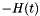; 
To find correct , we go back to the Principle of least action which is used to derive the Lagrangian equations. The relation between (standard) Hamiltonian 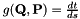 and Lagrangian 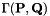 is
(5) 
The Principle of least action require the action
(6) 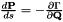
should take the mimimum path, thus any function variation  should makes
should makes  increase. Thus when
increase. Thus when  , this condition is satisfied. This leads to the Lagrangian equations and also the Hamitonian equations.
, this condition is satisfied. This leads to the Lagrangian equations and also the Hamitonian equations.
Here the integration takes from  to and the time is used as integration variable. Now we treat (t, Pt) as new coordinate and momemtum, H' as new Hamitonian, and use s as new integration variable. Then 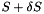 can be rewrited as:
to and the time is used as integration variable. Now we treat (t, Pt) as new coordinate and momemtum, H' as new Hamitonian, and use s as new integration variable. Then 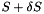 can be rewrited as:
(7)
It is obvious that when
(8) 
The formula (7) become the same form as (6). Then with Principle of least action, the Hamiltonian equation (4) can be derived. We call the 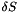 is the Hamiltonian in the extended phase space 
The Hamiltonian in extended phase space  is also useful for analyzing the systems where Hamiltonian 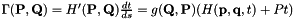 explicitly depends on time and is not conserved. Since time become a coordinate in ,
is also useful for analyzing the systems where Hamiltonian 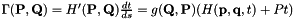 explicitly depends on time and is not conserved. Since time become a coordinate in ,  is zero thus
is zero thus  become conserved quantity. The method dealing with closed system can be used with Hamiltonian in extended phase space.
become conserved quantity. The method dealing with closed system can be used with Hamiltonian in extended phase space.
Time transformation for Separable Hamiltonian
With the Hamiltonian in extended phase space, we can integrate the equation of motions with step by choosing a kind of  . If we choose a that makes the Hamiltonian
. If we choose a that makes the Hamiltonian  separable for
separable for  and
and  :
:
(9) 
Then explicit Leapfrog (SIA) integration method can be used. Preto & Tremaine (1999) suggests to use
(10) 
where 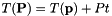 is the extended kinetic energy and  is the extended potential energy.
is the extended potential energy.
The Hamiltonian becomes separable:
(11) 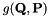
Then the equation of motions are:
(12) 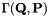;  ; 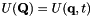;
; 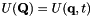;  ;
;
Since  ,
,  . Thus during integration,
. Thus during integration,  . This requires 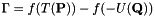. With Taylor expansion, we can obtain:
. This requires 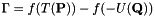. With Taylor expansion, we can obtain:
(13) 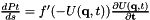
Thus 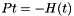
Logarithmic Hamintonian method
Mikkola & Tanikawa (1999) suggests to use the function  (Logarithmic Hamintonian method).
(Logarithmic Hamintonian method).